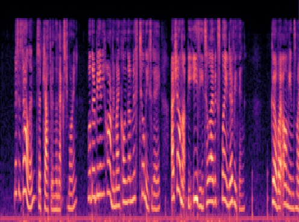
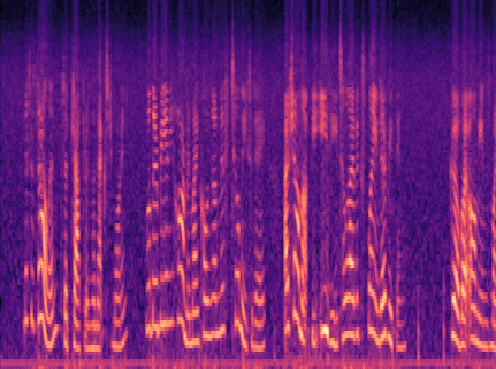
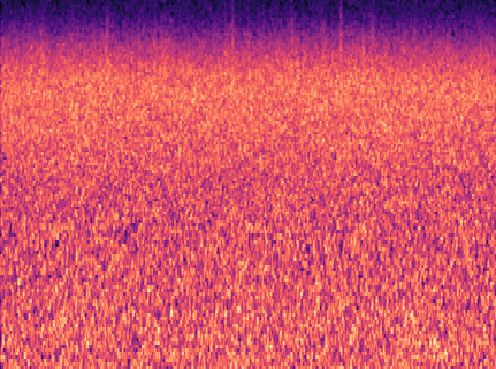
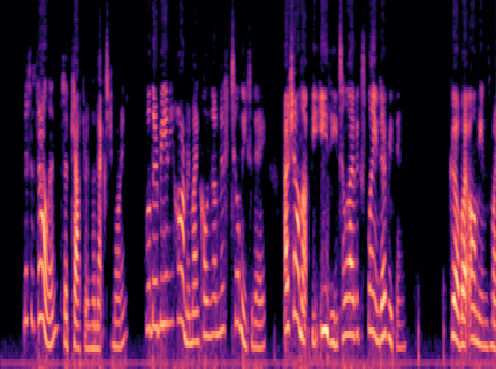
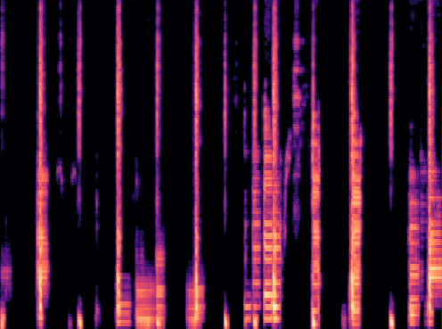
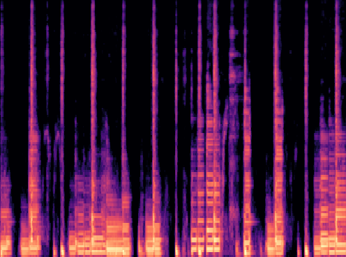

Anonymous Authors
Comparison of noisy and denoised libri3 and choice samples1. Notice the stereo effect from different noise but with the same underlying signal in the noisy reconstruction.
Ground Truth
Noisy Reconstruction
Noise Estimate
Clean Reconstruction
1https://librosa.org/doc/main/recordings.html
Comparison on noise reduction with noise estimate and without noise estimate. We observe strong cut-off when no noise estimate is provided.
Ground Truth
Reconstruction without Noise Estimate
Reconstruction with Noise Estimate
Comparison of different SIREN architectures. All reconstructions are computed after network quantization. We observe that the original SIREN, without positional encoding, is unable to reconstruct the signal.
PE refers to positional encoding, optimized SIREN refers to ω=100, NR refers to the Noise Reduce algorithm.
Ground Truth
Original SIREN
PE + SIREN
Optimized SIREN
Siamese SIREN + NR
Comparison and effect on reconstruction quality when reducing network size. We observe strong signal corruption with reduced network size.
How to read column [number of shared layers x layer width, number of siamese layers x layer width, number of parameters]
Ground Truth
[3x256, 0, 843k]
[2x256, 1x128, 513k]
[2x128, 1x64, 142k]
[2x64, 1x32, 42k]
Comparison on combination of shared and siamese layers. We observe an optimal trade-off when keeping two layers shared and one siamese layer.
How to read column [number of shared layers x layer width, number of siamese layers x layer width, number of parameters]
Ground Truth
[3x256, 0, 843k]
[2x256, 1x128, 513k]
[1x256, 2x128, 151k]
[0, 3x128, 75k]